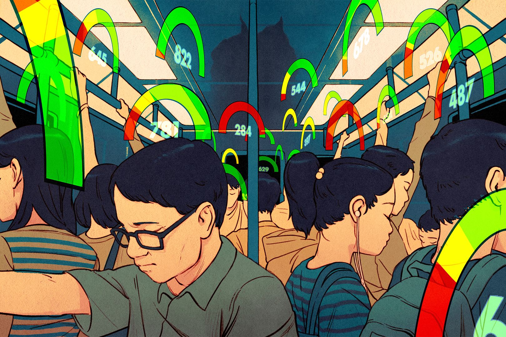
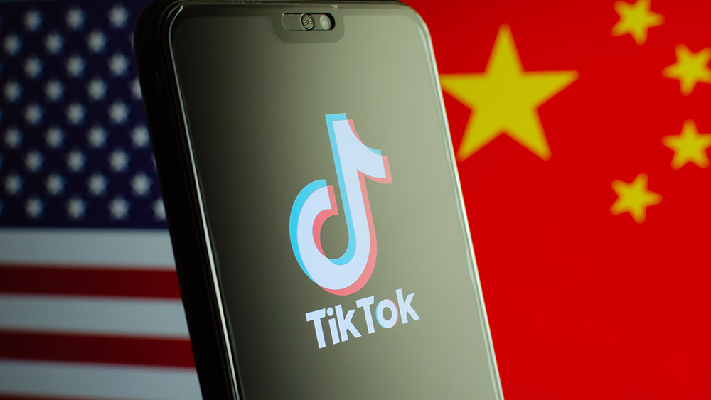

Herausforderungen für die Privatsphäre
Ethik und Recht
Nur reine Staatssicherheit oder unbefugter Eingruff in unsere Privatsphäre?China und Hongkong Situation: Social Credit
Ein extremes Beispiel spielt sich in China ab: China als Überwachungsstaat.
Chinesische Bürger werden tagtäglich von Kameras überwacht, rund 620 Millionen Kameras gab es in China im Jahr 2020. Errichtet sind sie nicht nur auf öffentlichen Plätzen, sondern auch vor Hoteleingängen, Karaokebars und Restaurants. Zudem wird die Kommunikation mit Mobilfunkgeräten überwacht und kontrolliert, so greifen Algorithmen in die Kommunikation ein und löschen Chatverläufe. Zu den Kameras kommen noch zahlreiche Wi-Fi- und Handy-Spürsysteme mit denen Bewegungen von Menschen nahezu lückenlos einsehbar ist. Zudem sind vermehrt Körperliche Merkmale in den Datenbanken zu finden, wie in etwa Stimmenprofile oder auch genetische Information von denen sich Profile von ganzen Familien anfertigen lassen. So ist es höchstwahrscheinlich, dass die Kommunistische Partei Chinas die massenhaften PCR-Tests dazu nutzt, um die biometrischen Daten von dessen Bürgern zu sammeln.
Die Kamera Überwachung wird auch dafür genutzt, um zu determinieren, ob es sich um einen guten oder schlechten Bürger handelt, mit den sogenannten Punktesystem. Jeder Bürger hat anfangs 1000 Punkte, dieser Punktestand nimmt mit guten Verhalten zu und mit schlechten ab. Geht man zum Beispiel über eine rote Ampel geht der score runter. Wer eine gute Bewertung hat, wird bevorzugt, wie bei sozialen Leistungen oder Zulassungen für Schulen. Jemand mit einer schlechten Bewertung (unter 600 Punkte) verliert diese Privilegien. Nicht nur das Individuum mit einer schlechten Bewertung leidet darunter, sondern auch seine Familie.
Dies ist natürlich im Westen unvorstellbar. Dies ist ein kontroverses Beispiel, worum sehr viel debattiert wird: gilt diese strenge Staatsüberwachung im China als Mittel zur Aufrechterhaltung der Stabilität und Sicherheit des Landes oder schränkt diese Kontrolle die Individuelle Freiheit und Grundrechte der Bürger ein? Man muss dazu noch berücksichtigen, dass mit diesem System die Minderheiten in China unterdrückt werden.
Auswirkungen auf die Gesellschaft: Beispiele und Fallstudien
Beliebte Social-Media App Tiktok Gefahr für westliche Staatssicherheit?
Immer wieder geriet die populäre App Tiktok ins Rampenlicht der Kontroverse, wegen dem Bruch des Datenschutzes. Tiktok ist einer der am schnellsten wachsenden Social-Media App, besonders populär ist sie unter Gen-Z, und gehört mittlerweile zum Alltag von vielen Menschen. Was viele der Nutzer jedoch nicht wissen ist, wie viele Daten eigentlich gesammelt werden. So werden z.B. Geodaten (Geolokalisierung), Identifikationsdaten, Web-Browsing-Verlauf. Außerdem kann die App Festplatten scannen, hat einen Zugriff auf die Kontakt Listen und kann auf den Kalender zugreifen. So sammelt Tiktok exzessiv viele Information über ihre User. Anscheinend ist das Unternehmen hinter Tiktok “ByteDance” dazu verpflichtet die gespeicherten Daten mit dem Chinesischen Geheimdienst zu teilen. Dies hat zur Folge, dass der chinesische Staat eine große Datenbank von westlichen Usern zu Verfügung hat und dass sie ungewollte Inhalte – die sich in etwa gegen China richten können, zensieren oder löschen können (nach Artikel 50 des neuen Cybergesetzes) - und durch Algorithmen chinesische Interessen im Westen durchzusetzen. Ihre Staatsüberwachung verlässt demnach die Grenzen von China und breitet sich Unwissen bar im Westen aus. So wurde Tiktok schon in Indien verboten, in den USA sind alle Soldaten und im Ministerium tätige Leute dazu aufgefordert Tiktok zu löschen. Vermehrt nutzen vor allem jüngere Leute Tiktok als Nachrichten- und Informationsquelle, anstatt als das herkömmliche Fernsehen- dies zeigt der “Reuters Institute Digital News Report”. Darum wird auch vermehrt beobachtet wie sich Nachrichten Sendungen wie die Tagesschau, auf Tiktok breitmachen. Trotzdem geraten viele Jugendliche in “Fake News” und werden falsch informiert.
Tiktok hat keine Ende-zu-Ende Verschlüsslung*
Facebook-Cambridge Analytica Daten Skandal: Firma Cambridge Analytica Nutz Facebook-Nutzerdaten für den US-Wahlkampf und die Brexit-Kampagne? Mark Zuckerberg Anhörung*

Auch Facebook stand unter Kontroverse: Der zum britischen Der zum britischen Guardian gehörende „Observer“ und die „New York Times“ deckten unter anderem auf, dass Cambridge Analytica sich über eine vermeintlich wissenschaftliche App unrechtmäßig persönliche Daten von Millionen Facebook-Nutzern beschafft hat, um Wähler mit zielgerichteten Botschaften zu manipulieren. Mit der Anwendung “This Is Your Digitial Life” konnten Facebook User einen Persönlichkeitstest machen, doch hat diese Anwendung nicht nur Informationen über die Leute gesammelt, die die App bewusst genutzt haben, sondern auch über dessen Kontakte. Die App wurde von der Firma Global Science Research (GSR) entwickelt, der Inhaber Aleksandr Kogan, nutzte diese Drittanbieter App, um die Daten von Millionen von Facebook Nutzern zu sammeln. Kogan gab an das er die Daten für wissenschaftliche Zwecke nutzen würde, als er noch Assistenzprofessor am Lehrstuhl für Psychologie der Universität Cambridge war. Die Daten wurden wiederum allesamt an Cambridge Analytica weitergegeben. So wusste Facebook anscheinend seit 2015 davon, dass die Daten über Millionen Facebook-Nutzer an Cambridge Analytica weitergeleitet worden ist. Nutzer wurden zudem nicht informiert, dass ihre Daten illegal an einen Drittanbieter gelangt waren. Bei den Daten, die von Cambridge Analytica gesammelt wurden, handelt es sich um: Angaben zu Likes, Aktivitäten und Kontakten sowie zur eigenen Soziodemographie und Identität. Dazu zählten auch sensible Informationen wie die zur sexuellen Orientierung oder Religion, zur politischen Überzeugung oder zum Beziehungsstatus. Diese Persönlichkeitsprofile wurden anschließend dafür eingesetzt, um die Botschaften der Trump-Kampagne im US-Wahlkampf auf möglichst kleine Zielgruppen zuzuspitzen. Der Whistleblower Christopher Wylie beschreibt, dass Cambridge Analytica ein ganzes Informationsökosystem von Webseiten und Blogs aufgesetzt habe, die nicht als Teil der Trump-Kampagne erkennbar waren. Sie seien genutzt worden, um Wähler gezielt mit vermeintlich unabhängigen Informationen zu versorgen, für die sie laut ihrem Profil besonders ansprechbar sind. So seien Wähler immer genau mit den Forderungen und Versprechen Trumps bespielt worden, die bei ihnen die größte Wirkung erzielen würden. Auch in der Pro- Brexit- Werbung hat die Firma mitgemischt.
Der Fall Cambridge Analytica ist nur ein Auswuchs dieses System, der zeigt, wie verantwortungslos Facebook mit seiner Datenmacht umgeht. Aller Community-Rhetorik zum Trotz stellt Mark Zuckerberg Profit über die Interessen von Nutzern und Gemeinwohl. Es ist deshalb unabdingbar, dass Politik und Datenschutzbehörden die Datenschutzgrundverordnung (DSGVO) nutzen, um Facebooks Datenpraxis zu zügeln.
OSINT (Open Source Intelligence): bezeichnet die Informationsgewinnung aus offen Quellen. Öffentlich zugängige Daten werden für Böse Intentionen genutzt, um einen Hacker Angriff zu starten. Diese Informationen beinhalten Daten wie Standort, Namen, Namen von Freunden oder Familienmitgliedern, die zum Beispiel von Social-Media Accounts abgeleitet werden.
- Google Dorking/ Google Hacking: Es handelt sich hierbei um eine Hacking-Suchmethode, die es ermöglicht, mithilfe erweiterten Suchanfragen versteckte Informationen in Google aufzudecken. Hierfür werden spezielle Suchbefehle - einschließlich Parameter und Suchoperatoren- in der Google- Suchleiste dafür genutzt, um verborgene Teile von Webseiten offen zu legen. Hierbei handelt es sich um eine legale Methode, um an sensible oder private Informationen zu Webseiten und zu ihren Eigentürmern zu gelangen. Auch der Nutzer ist nicht sicher, Google speichert große Mengen an Daten von seinen Millionen Usern. Dies ermöglicht es Bösartigen Hackern Daten über anvisierte Opfer zu sammeln und eine Reihe von Attacken zu starten. Google Dorking ermöglicht es Identitätsdiebstahl durchzuführen oder auch eine Phsisng- E-Mail an ein nicht ahnendes Opfer zu schicken, um an Kreditkarten Information oder Passwörter zu gelangen. Ebenfalls ermöglicht es Google- Dorking Zugriff auf Server, Kameras, Dateien oder auch Passwörter zu verschaffen. Wir alle stehen in der Gefahr von einer solchen Attacke angegriffen zu werden, denn wir alle nutzen Tag- täglich Google als unser Suchportal.